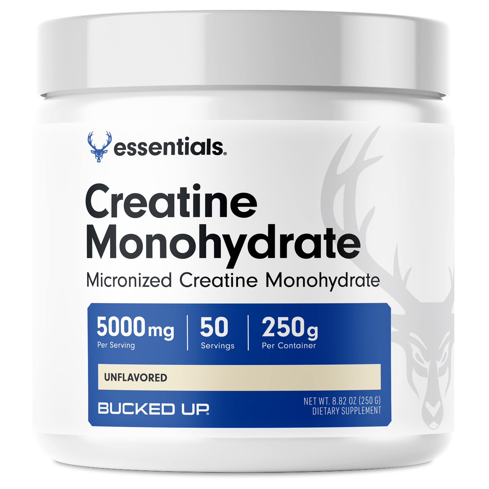

Our Signature Pre-workout
We honored the man responsible for making one of the best flavored drinks of all time with a Tropical Punch flavored pre-workout. With our signature formula, you can expect to feel energized while working out while also having the best workout of your life with our pump focus ingredients. For only 39.99 you get 25 servings of amazing pre-workout.
The ONLY Protein Powder you'll ever need
Our protein powder has 25g of protein for maximum protein intake. Our bodies can only handle 25g of protein with a single serving. Here at Matt's supplements we strive to make the best supplements for your body. Our protein powder is made with 100% whey protein isolate. What that means is, your body is going to be taking in one of the best forms of protein. The flavor we chose to make is a personal favorite of mine being oreo. Oreo isn't going to be bland like vanilla or chocolate. While those options are still good, oreo takes the cakes. We made sure that it tastes exactly like an oreo when you drink it. We added little chunks of oreo to help enhance the flavor even more. Just mix with water or milk and enjoy that cookie goodness.
Creatine Monohydrate
Our creatine supplement comes in two forms, pill or powder. Our creatine is going to help build your muscles even more during your workouts. Just take one scoop of the powder or two of the pills and watch as your muscles grow some more as you continue your fitness journey. We made sure that you could get 30 servings out of either form to get you through the month. At only 25$ per bottle or tub you get the best bang for your buck for our creatine.